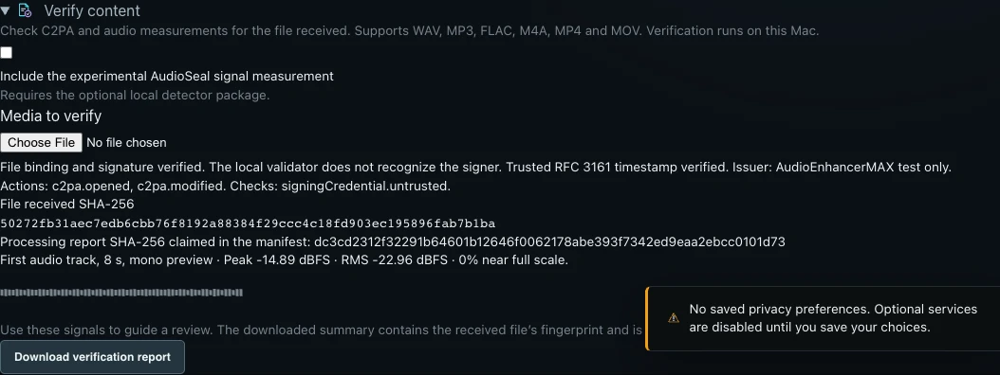
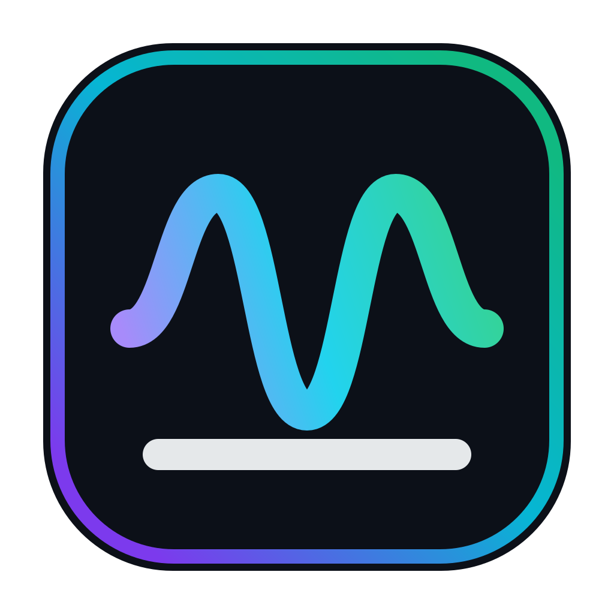
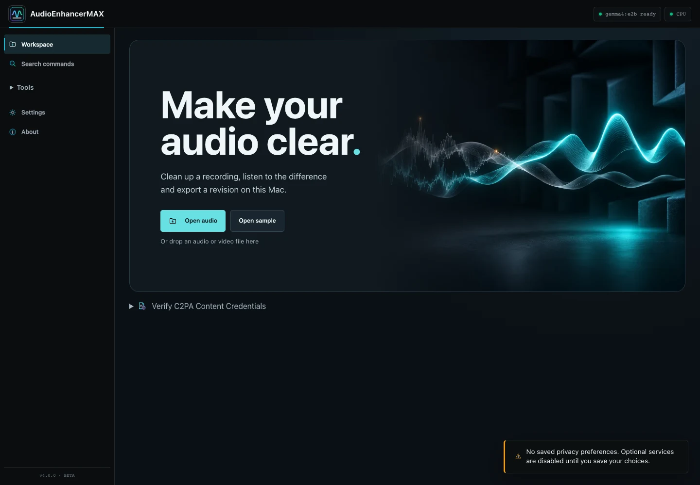
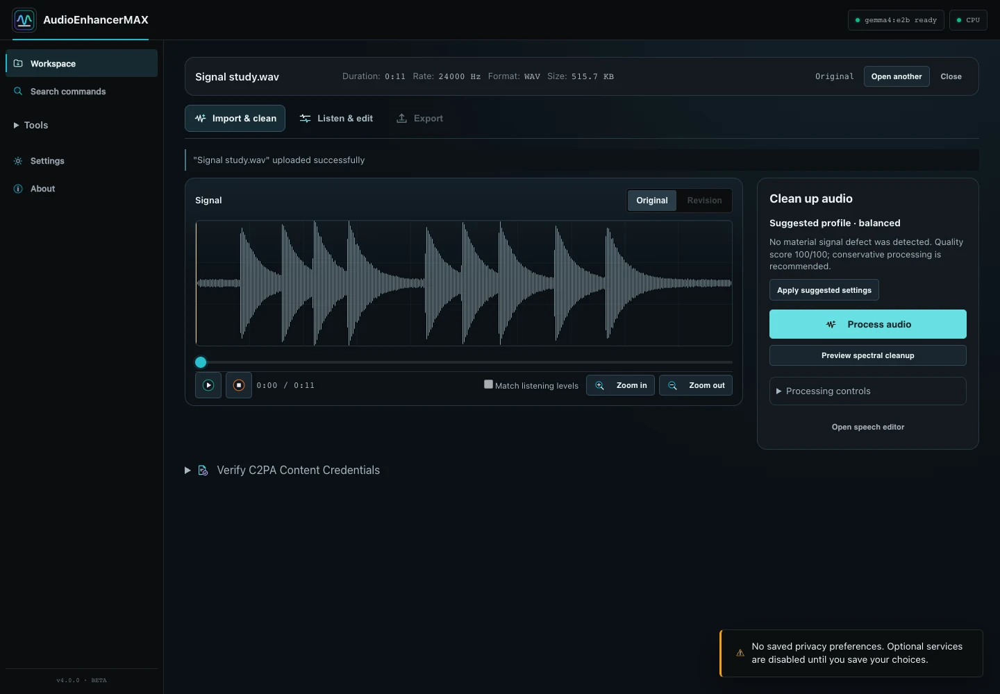
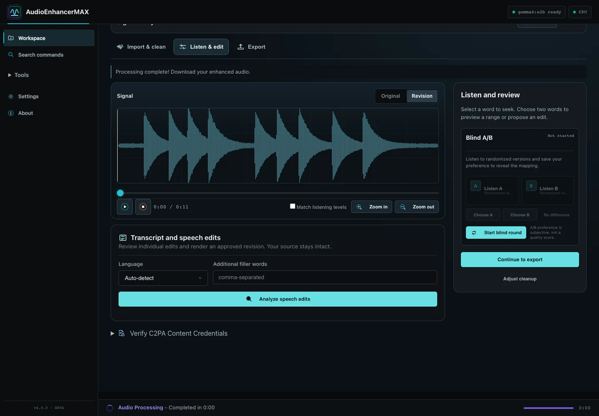
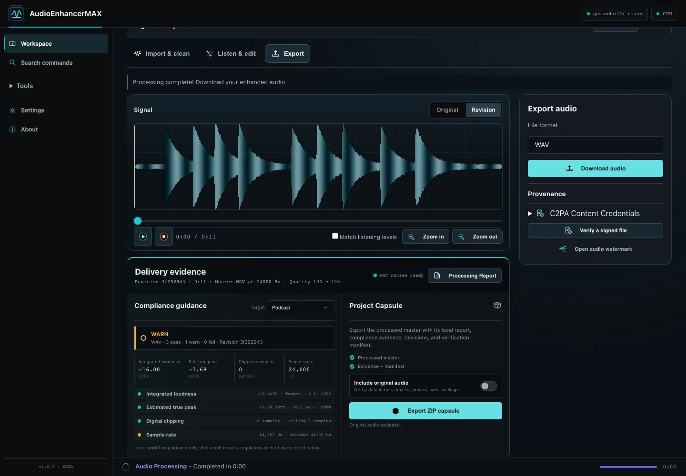
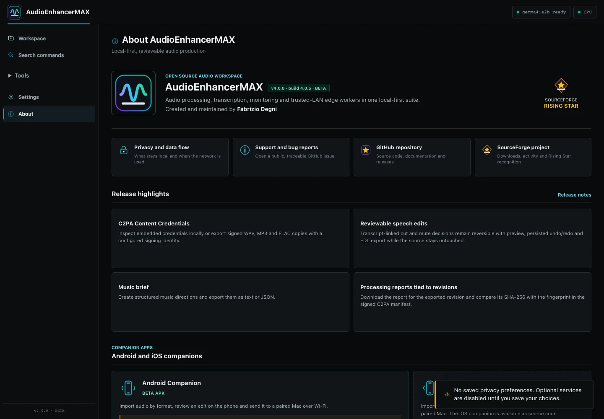
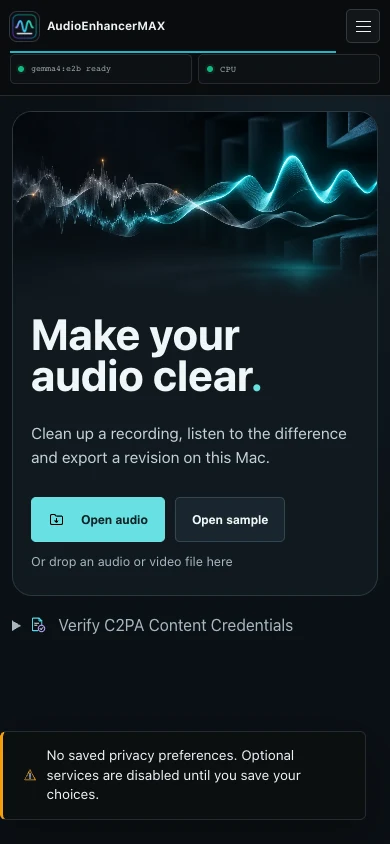

Press materials · Direct Mac BETA
AudioEnhancerMAX 4.1 BETA
Inspect the file you received. Read its provenance, examine its audio and keep a report.
Verify content brings offline C2PA, a SHA-256 fingerprint and bounded audio measurements into one workspace on Mac, iOS and Android. Mac 4.1.0 is a signed and notarized Apple Silicon download. Android build 16 is a signed BETA APK. iOS build 12 is an unsigned developer archive with source. Mobile store availability and physical phone testing are pending.
Verifica il file che hai ricevuto. Leggi la provenienza, esamina l’audio e conserva il report.
Download the 4.1 BETA press kit · Downloads · Verification examples

Earlier 4.0 BETA workspace gallery

Download the 4.0 BETA press kit
Download transparent logo · Download vector logo


Clean up audio. Compare the difference. Export with a report linked to the revision.
What is in the BETA
- A waveform-centred workspace for import and cleanup, listening and editing, then export.
- Same-excerpt spectral cleanup preview, local analysis, suggested settings, and recent files.
- Original/revision A/B with playhead mapping for speech-editor cuts, and optional listening-only level matching.
- Transcript-linked selection and reviewable cut or mute proposals, with undo and redo.
- Format-specific delivery checks, processing report and Project Capsule tied to the completed result.
Apple Silicon (arm64), macOS 13 or later. Developer ID signed, Apple notarized and stapled.
Quit AudioEnhancerMAX before replacing the app. Keep the earlier stable DMG available if you need to return to 3.9.0.
Playhead mapping covers speech-editor cuts. Other Enhance operations that change duration may use independent playheads. Speech analysis requires the local model. The companion adds filtered import, two-way Wi-Fi pairing and About links for privacy and support. See the exact scope in the build verification record.
With a configured signing identity, the app can embed C2PA Content Credentials in a copy of a WAV, MP3 or FLAC export. The manifest records the revision and the SHA-256 of its downloadable processing report. Audio watermarking is a separate action that changes the audio samples.
The direct Mac build supports a non-exportable Keychain signing key and RFC 3161 timestamping with a configured service. Apple's Developer ID and notarization apply to the app package. A C2PA validator assesses the audio signature and trust for the media separately.
Get the Mac BETA · Release notes · Verify the C2PA samples
Captured from the Mac 4.0.5 workspace with the bundled synthetic recording.












Materiali stampa in italiano
Scarica il kit stampa della 4.0 BETA · Scarica il logo originale trasparente · Scarica il logo vettoriale.
AudioEnhancerMAX 4.0 BETA, build 4.0.5, ridisegna il percorso Mac dalla pulizia all’ascolto e alla consegna. In una sola sessione puoi rivedere la forma d’onda, confrontare originale e revisione sullo stesso passaggio quando la mappa è disponibile, approvare tagli o mute dalla trascrizione e scaricare un report legato al risultato.
Con un’identità di firma configurata, una copia WAV, MP3 o FLAC può includere Content Credentials C2PA. Il manifesto contiene l’impronta del report scaricabile. I campioni pubblici usano un firmatario di test. Il watermark audio è una funzione separata.
La build diretta è per Apple Silicon con macOS 13 o successivo. Il companion aggiunge la selezione del formato, l’abbinamento Wi-Fi nelle due direzioni e la sezione About con i link a supporto e privacy. La disponibilità degli store e dei companion segue canali separati.
Archive · Stable 3.9.0 press kit
Press materials · Stable 3.9.0 · Build 3.9.2
Local audio, reviewable decisions and Music brief
AudioEnhancerMAX is a free, MIT-licensed application for Apple Silicon Macs. Stable 3.9.0 adds editable music prompts to its local audio cleanup, transcription and speech-editing workflow.
Materials for reporting and hands-on review
English and Italian announcements, reviewer steps, screenshots of stable 3.9.0, the project logo and a developer-created audio sample.
Download press kit EN / ITInstall the stable app · Release notes and checksums · Verification and limits

What is new
Music brief offers six original presets, editable styles and arrangement directions, a separate lyrics field and JSON export that retains source inputs and the edited prompt. The core builder works without a model or network. Optional Ollama suggestions require an installed local model and permission; they remain separate until reviewed and appended.
This assistant prepares text, not generated music. It does not call MiniMax. Drafts remain in the current session, so copy or export before closing; JSON re-import is not included.
Release facts
| Version | 3.9.0 stable, build 3.9.2 |
|---|---|
| Platform | Apple Silicon (arm64), macOS 13 or later |
| Price / license | Free direct download; MIT-licensed source; no account for the core workflow |
| Distribution | Developer ID signed, Apple notarized and stapled direct DMG. No App Store approval is implied. |
| Data and upgrade | Existing stable data is retained. Experimental 1 stays separate; previous stable 3.8.3 remains available. |
| Models and network | Transcription may download a model on first use, then runs locally. Ollama and other optional engines need separate components. Optional Edge TTS sends text to Microsoft. |
A practical first look
- Install and complete the local readiness screen.
- Open Music brief, apply Podcast intro, write a short description, build and edit the prompt, then export JSON.
- Import a recording you own. Apply conservative cleanup, compare original and output and export WAV, MP3 or FLAC.
- Review the processing report and export a Project Capsule. Try transcription once a model is available and review proposed speech edits before rendering.
Video tour
Watch the 4:33 workflow tour on YouTube. English narration with English and Italian subtitles. The tour was recorded with Experimental 1 and uses synthetic narration and edited application captures. The Music brief workflow is now in stable 3.9.0; the version badge in the video remains Experimental.
What the evidence does and does not show
Automated regressions, packaged workflow checks, signature verification and dependency checks are documented with the release. They do not establish every supported macOS configuration, first-time model acquisition, subjective listening quality or transcription accuracy. Loudness guidance and hashes support review, not certification.
Materiali stampa in italiano
AudioEnhancerMAX 3.9.0 porta Music brief nella versione stabile dell’app gratuita per Mac: sei preset, prompt modificabili, lyrics separate ed esportazione JSON. Il flusso si affianca a pulizia audio locale, trascrizione e modifiche del parlato da rivedere.
La costruzione di base non richiede modelli o rete. I suggerimenti opzionali di Ollama richiedono consenso e revisione. Music brief prepara testi e non genera musica. Le bozze vanno copiate o esportate prima di chiudere la sessione.
Il kit comprende comunicato italiano, guida alla prova, schermate della stabile, logo e campione audio dello sviluppatore. Il video esistente ha sottotitoli italiani ed è stato registrato con la precedente Experimental 1.
Attribution and feedback
Application and screenshots: AudioEnhancerMAX / Fabrizio Degni. Assets are supplied for reporting on the project; they do not imply independent review or endorsement. Report reproducible issues using a synthetic or redacted example. Developer profile.